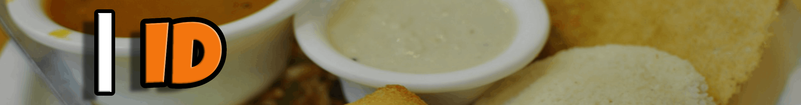
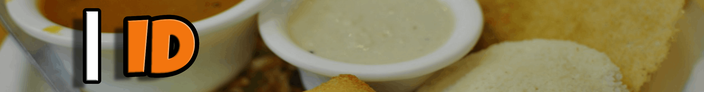
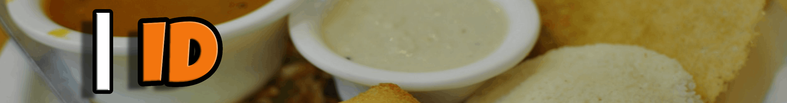
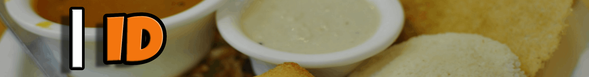

3 and 3/4 cup basmati rice, 3/4 tablespoon fenugreek seeds, 1/3 cup and 2 and 1/4 tablespoon sesame oil, 2 and 1/4 cup urad dal, salt As required, water As required.
 



3 and 3/4 cup basmati rice, 3/4 tablespoon fenugreek seeds, 1/3 cup and 2 and 1/4 tablespoon sesame oil, 2 and 1/4 cup urad dal, salt As required, water As required.
Soak the rice & dal and grind into a paste & combine To prepare this popular South Indian recipe, wash rice and urad dal separately until the water runs clean and add fenugreek seeds to the rice. Soak it in water for 4-6 hours. Soak the urad dal too for the same amount of time. Drain all the water from the urad dal and grind it to a fine paste. Add water accordingly. Grind the rice to a coarse paste (add water as needed) and then mix both the pastes together in a large bowl and whisk them well. Make sure that the consistency is thick.
Let the batter ferment, then add salt Now, the idli batter needs to be well-fermented. This step is very important to get soft and fluffy idlis. Keep the batter in a warm place to ferment. Once the batter has risen, add salt to it and whisk to mix it well.
Transfer the idli batter in the idli stand Grease the idli stand with oil and take a ladleful of batter and fill the idli mould. Add ½ cup of water in the idli steamer and let it boil. Put the idli stand inside and close the lid. Let the steam build for 8-10 minutes before switching off the gas.
Wait for the utensil to cool a bit before scooping the idlis out If you are using a cooker, use it without a vent and steam it for 10 minutes and then switch the gas off. In both cases, wait till the steam is released before you take the idli stand out. Wait for another 5 minutes and then use a sharp knife to scoop the idlis out. Serve warm with coconut chutney and sambhar.